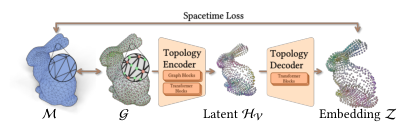
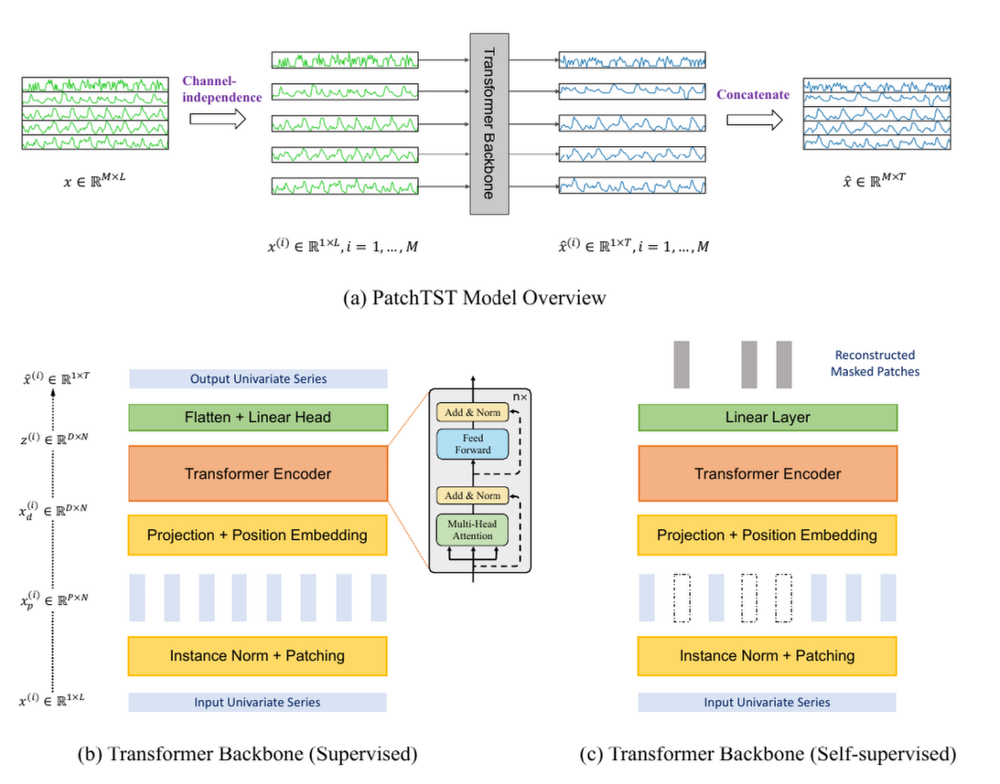

Derrick Liu
日拱一卒，功不唐捐。
latest posts
全部文章 →selected reading
一些论文阅读笔记，记录方法梳理、推导与思考。

projects & practice
XJTU ICS Experiments
计算机系统导论实验的代码实践与学习记录。从 Data Lab 的位运算，到 Bomb Lab 的 x86-64 汇编分析与 GDB 调试。
欢迎交流论文、技术和音乐。
日拱一卒，功不唐捐。
一些论文阅读笔记，记录方法梳理、推导与思考。
计算机系统导论实验的代码实践与学习记录。从 Data Lab 的位运算，到 Bomb Lab 的 x86-64 汇编分析与 GDB 调试。
欢迎交流论文、技术和音乐。